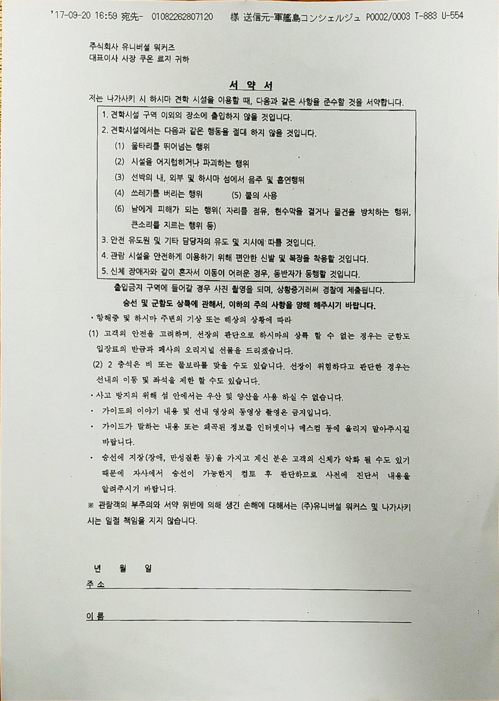

군함도 바라보다
12월 20일 업데이트 예정.
군함도와 강제동원 언급에 있어서 한국과 일본 사이에는 넘을 수 없는 큰 벽이 있어 보였다. 이에 미래뉴스실습 취재팀은 군함도를 비롯해 나가사키에 있는 관련 시설을 직접 찾아가보았다. 2박 3일의 일정으로 인천을 출발한 20명의 취재팀은 군함도의 민낯과 마주할 수 있었다.

보슬비가 내리던 11월 20일 아침, 취재팀은 한국과 일본 모두에게 환영받지 못한 영화 '군함도'에서 시작된 논란을 직접 눈으로 확인하기 위해 나가사키항을 향해 출발했다. 군함도를 가기 위해 승선 시간을 기다리는 사람들이 항구에 가득했다. 답사를 온 것처럼 보이는 대학생들부터 행복해 보이는 커플, 가족 단위 관광객이나 노년 부부들까지 많은 관광객들이 줄을 서고 있었다. 간간이 서양인도 보였다. 독일에서 왔다는 한 청년은 군함도가 일본에서 추천하는 유명한 관광지라서 찾아왔다며 다음 달에는 한국에 간다고 반가워했다. 74년 무인도가 된 군함도는 어느새 많은 이들에게 사랑받는 섬이 되어있었다.


 항구에는 매표소만 있는 것이 아니었다. 매표소 옆 작은 상점에서는 군함도와 관련된 다양한 제품을 만날 수 있었다. 석탄 모양을 한 과자, 군함도 미니어처, 군함도 사진집을 비롯해 군함도 티셔츠까지 다양한 기념품이 관광객들의 시선을 끌었다. 군함도로 향하는 페리 내부에서는 군함도와 관련된 영상이 쉬지 않고 흘러나왔다. 군함도 가이드가 관객들을 웃기기도 하며 설명을 이어나갔다. 관광객들은 배를 탔다는 즐거움 때문인지 사진을 찍으며 즐거운 시간을 보냈다. 가위바위보로 간단한 이벤트를 준비해 선물을 주기도 했고, 군함도 모양의 기념품과 관련 상품과 나가사키 특산품인 카스테라를 팔기도 했다.
항구에는 매표소만 있는 것이 아니었다. 매표소 옆 작은 상점에서는 군함도와 관련된 다양한 제품을 만날 수 있었다. 석탄 모양을 한 과자, 군함도 미니어처, 군함도 사진집을 비롯해 군함도 티셔츠까지 다양한 기념품이 관광객들의 시선을 끌었다. 군함도로 향하는 페리 내부에서는 군함도와 관련된 영상이 쉬지 않고 흘러나왔다. 군함도 가이드가 관객들을 웃기기도 하며 설명을 이어나갔다. 관광객들은 배를 탔다는 즐거움 때문인지 사진을 찍으며 즐거운 시간을 보냈다. 가위바위보로 간단한 이벤트를 준비해 선물을 주기도 했고, 군함도 모양의 기념품과 관련 상품과 나가사키 특산품인 카스테라를 팔기도 했다.
 하이라이트는 나가사키 시에서 만든 군함도 캐릭터 '간쇼군'이었다. 나가사키항 상점에서부터 눈길을 끌던 간쇼군은 암초(간쇼- がんしょう) 소년이라는 뜻으로, 군함도를 모자같이 머리에 쓴 귀여운 외모의 캐릭터였다. 간쇼군의 이야기는 짧은 애니메이션으로 제작되어 군함도를 향하는 바다 위 브라운관에서 상영되었다. 스토리는 간단하다. 먼 옛날 간쇼군은 인간 친구가 많았지만, 갑자기 어느 날부터 아무도 그를 찾아오지 않았다. 최근 들어 인간 친구가 많이 찾아와줘서 기쁘니 더 찾아와달라는 것이다. 귀신이 나오는 섬, 음산한 섬의 이미지를 탈피하여 관광객에게 쉽고 친숙하게 접근하려는 듯 보였다. 과장이라고 생각했던 연간 추정 관광객 백만 명이 납득이 가는 순간이었다. 이곳은 인기 있는 관광지, 군칸지마(ぐんかんじま)였다.
하이라이트는 나가사키 시에서 만든 군함도 캐릭터 '간쇼군'이었다. 나가사키항 상점에서부터 눈길을 끌던 간쇼군은 암초(간쇼- がんしょう) 소년이라는 뜻으로, 군함도를 모자같이 머리에 쓴 귀여운 외모의 캐릭터였다. 간쇼군의 이야기는 짧은 애니메이션으로 제작되어 군함도를 향하는 바다 위 브라운관에서 상영되었다. 스토리는 간단하다. 먼 옛날 간쇼군은 인간 친구가 많았지만, 갑자기 어느 날부터 아무도 그를 찾아오지 않았다. 최근 들어 인간 친구가 많이 찾아와줘서 기쁘니 더 찾아와달라는 것이다. 귀신이 나오는 섬, 음산한 섬의 이미지를 탈피하여 관광객에게 쉽고 친숙하게 접근하려는 듯 보였다. 과장이라고 생각했던 연간 추정 관광객 백만 명이 납득이 가는 순간이었다. 이곳은 인기 있는 관광지, 군칸지마(ぐんかんじま)였다.


 나가사키항을 떠나니 양옆으로 거대한 조선소가 보였다. 군함도와 함께 유네스코 세계문화유산으로 지정된 거대한 '자이언트 크레인'이 등장하고, 그 한가운데에는 주황색 마름모가 세 개 모여있는 미쓰비시 그룹의 마크가 선명하게 찍혀있었다. 나가사키에 위치한 미쓰비시 조선소이다. 미쓰비시 조선소는 미쓰비시 그룹의 중심인 미쓰비시 중공업이 운영한다. 바로 이 미쓰비시 중공업이 과거 군함도의 소유주였으며, 이후 무인도가 된 군함도를 2001년 나가사키 시(당시 다카시마 정)에 무상으로 양도했다. 관광객들은 미쓰비시 그룹이 일본 최고의 기업이라는 가이드 설명을 들으며 미쓰비시 상표가 있는 크레인을 렌즈에 담는 데 여념이 없었다.
나가사키항을 떠나니 양옆으로 거대한 조선소가 보였다. 군함도와 함께 유네스코 세계문화유산으로 지정된 거대한 '자이언트 크레인'이 등장하고, 그 한가운데에는 주황색 마름모가 세 개 모여있는 미쓰비시 그룹의 마크가 선명하게 찍혀있었다. 나가사키에 위치한 미쓰비시 조선소이다. 미쓰비시 조선소는 미쓰비시 그룹의 중심인 미쓰비시 중공업이 운영한다. 바로 이 미쓰비시 중공업이 과거 군함도의 소유주였으며, 이후 무인도가 된 군함도를 2001년 나가사키 시(당시 다카시마 정)에 무상으로 양도했다. 관광객들은 미쓰비시 그룹이 일본 최고의 기업이라는 가이드 설명을 들으며 미쓰비시 상표가 있는 크레인을 렌즈에 담는 데 여념이 없었다.
 미쓰비시 조선소를 지나면 작은 섬이 보인다. 얼핏 보기에 지평선 위에 섬이 하나 밖에 보이지 않아 군함도로 착각할 수 있지만, 군함도가 아닌 다카시마다. 무한도전을 통해 많은 이들에게 알려졌으나, 최근 안전상의 이유로 출입이 금지된 '조선인 공양탑'이 있는 섬이다. 다카시마에서는 군함도보다 먼저 탄광이 개발되었고, 역시 많은 조선인들이 강제로 끌려와 다시는 고향땅을 밟지 못했다. 좁은 군함도를 대신하여 군함도 기념관도 있지만 취재팀은 빠듯한 취재 일정에 쫓겨 다카시마를 배 위에서 아쉽게 바라볼 수밖에 없었다.
미쓰비시 조선소를 지나면 작은 섬이 보인다. 얼핏 보기에 지평선 위에 섬이 하나 밖에 보이지 않아 군함도로 착각할 수 있지만, 군함도가 아닌 다카시마다. 무한도전을 통해 많은 이들에게 알려졌으나, 최근 안전상의 이유로 출입이 금지된 '조선인 공양탑'이 있는 섬이다. 다카시마에서는 군함도보다 먼저 탄광이 개발되었고, 역시 많은 조선인들이 강제로 끌려와 다시는 고향땅을 밟지 못했다. 좁은 군함도를 대신하여 군함도 기념관도 있지만 취재팀은 빠듯한 취재 일정에 쫓겨 다카시마를 배 위에서 아쉽게 바라볼 수밖에 없었다.
 승선하기 전 탑승객들은 독특한 서류를 하나 작성한다. 바로 서약서다. 언뜻 보면 지정된 견학 구역만 다니며 금지 행위를 하지 않는다는 평범한 내용들이다. 그러나 그 밑에는 가이드의 이야기와 선내 영상의 동영상 촬영을 금지하고 가이드가 말하는 내용과 왜곡된 정보를 인터넷이나 매스컴 등에 올리지 않는다는 항목이 이어진다. 다소 생소한 요구 사항에 잠시 당황했지만, 다른 관광객들에게 ‘군함도에 어떻게 오게 되었느냐’라는 질문조차 금지하는 업체의 민감한 반응에 그 이유가 짐작이 되었다. 그럼에도 공식 세계문화유산에 대한 설명을 기록조차 못한다는 사실은 조금 이해하기 힘들었다.
거친 파도와 변덕스러운 날씨는 일 년 중 백 여일만 군함도 상륙을 허락한다. 운 좋게도 아침에 내린 비는 일찌감치 멈춰 출항과 상륙이 허락되었다. 하지만 나가사키항을 떠나 군함도를 향해 가는 40여 분의 바닷길은 만만치 않았다. 찬바람이 피부를 강하게 할퀴었다. 내륙으로 들어오는 강한 해류는 가로지르는 배와 강하게 부딪쳐 파도를 만들어냈다. 사진을 찍기 위해 일어선 관광객들은 휘청이기 일쑤였다. 덕분에 나가사키 본토에서 불과 4km 정도 떨어진 군함도는 아무도 빠져나가지 못하는 '감옥섬'으로 불리기도 했다. 콩깻묵으로 끼니를 때우고 물도 주지 않아 갈증으로 고통받았던 조선인에게는 두꺼운 철창이나 다름없었다. 군함도 맞은편 해안가의 도로변에 있는 '난고시묘 무연고 해난 사망자의 비'는 당시 얼마나 많은 이들이 탈출하다가 싸늘한 시체로 해안가에 떠밀려왔는지 짐작가게 한다.


 거친 파도 너머로 군함 형태의 섬이 보이기 시작한다. 육안으로 작은 섬의 크기가 단번에 짐작이 되었다. 과거 나가사키 지역 신문기자가 붙인 군함도의 원래 이름은 '하시마'다. 작은 섬이었던 하시마는 4번의 증축으로 원래의 모습을 잃고 지금의 군함도가 되었다. 독특한 외형은 관광객들의 시선을 끌었다. 모두들 사진을 찍으며 즐거워했고 대단하다는 말을 반복하며 가이드의 설명에 귀를 기울였다. 쓰러지기 직전의 폐허가 가득한 섬에는 어떤 생명의 징후도 보이지 않았다. 회색 콘크리트 섬에는 어떤 소리도 들리지 않았다.
거친 파도 너머로 군함 형태의 섬이 보이기 시작한다. 육안으로 작은 섬의 크기가 단번에 짐작이 되었다. 과거 나가사키 지역 신문기자가 붙인 군함도의 원래 이름은 '하시마'다. 작은 섬이었던 하시마는 4번의 증축으로 원래의 모습을 잃고 지금의 군함도가 되었다. 독특한 외형은 관광객들의 시선을 끌었다. 모두들 사진을 찍으며 즐거워했고 대단하다는 말을 반복하며 가이드의 설명에 귀를 기울였다. 쓰러지기 직전의 폐허가 가득한 섬에는 어떤 생명의 징후도 보이지 않았다. 회색 콘크리트 섬에는 어떤 소리도 들리지 않았다.
군함도에 상륙한 이들에게 주어진 투어 시간은 단 30분, 장소는 단 세 군데였다. 콘크리트 건물이 무너질 수 있다는 이유로 군함도의 서쪽만이 공개되어있었고, 서쪽에 비해 파도가 약해 주거지역이 형성된 동쪽은 공개되지 않았다. 피해자들의 증언과 자료들은 동쪽에 조선인 수용소 및 거주지가 있다고 주장하지만 이를 가까이에서 확인할 수는 없었다. 면적이 매우 좁은 군함도는 많은 인구를 수용하기 위해 일본에서 처음으로 아파트를 건설하였다. 이런 이유로 동쪽에는 아파트가 빽빽이 들어서 있었고, 겉으로 보기에도 낡은 건물들은 위험해 보였다.
 제한된 시간과 공간만이 허락되기에 관광객은 가이드의 한마디 한마디에 귀를 기울였다. 배에서 내린 승객들은 가이드를 따라 미쓰비시 간부가 살았던 집과 학교를 볼 수 있는 1구역에 집합했다. 가이드는 강제 징용은 물론, 선상에서는 자랑스럽게 말하던 유네스코 세계문화유산에 대해서는 크게 언급하지 않았다. 학교에 엘리베이터가 있었다는 사실이나 간부들은 모두 오션뷰에 살았다는 등 관객들이 재미있어 할 만한 이야기를 이어갔다.
제한된 시간과 공간만이 허락되기에 관광객은 가이드의 한마디 한마디에 귀를 기울였다. 배에서 내린 승객들은 가이드를 따라 미쓰비시 간부가 살았던 집과 학교를 볼 수 있는 1구역에 집합했다. 가이드는 강제 징용은 물론, 선상에서는 자랑스럽게 말하던 유네스코 세계문화유산에 대해서는 크게 언급하지 않았다. 학교에 엘리베이터가 있었다는 사실이나 간부들은 모두 오션뷰에 살았다는 등 관객들이 재미있어 할 만한 이야기를 이어갔다.
이후 투어는 탄광 입구가 있던 2구역에서 이어졌다. 가이드는 덥고 습하고 어두운 지하탄광에서 노동자들이 목숨을 걸고 일했기에 지금의 우리가 편하게 살 수 있다는 점을 강조했다. 취재팀과 우연히 함께 온 중국인 관광객도 의식해서였는지, 인솔하던 가이드는 목소리를 낮추며 다음과 같이 말을 이었다.
"여기에는 중국 그리고 한국에서 와서 돌아가신 분들도 굉장히 많이 있습니다. 우리는 지금 편리한 생활을 보내고 있지만, 그 아래에는 이렇게 희생된 분들의 영혼의 희생도 있다는 사실을 알았으면 좋겠습니다. 또한, 이 군함도는 세계유산이고 폐허의 섬입니다만, 산업의 도래를 목숨 걸고 노동으로 지탱했던 탄광 노동자들이 있었다는 사실을 조금이라도 생각하고, 돌아가신 영혼들과 그러한 분들에 대한 감사의 마음을 가지면서 이 군함도를 걸어가셨으면 합니다. 그저 관광지의 섬만이 아니라는 점을 생각하면서 걸어가셨으면 좋겠습니다."
나가시키 시에서 허가를 받아 군함도 투어를 제공하는 회사는 총 다섯 곳. 군함도 홍보물이나 알림판 하나 없이 가이드에게만 귀를 기울이는 군함도 투어. 이런 구조에서 한국인과 중국인 관광객이 없는 투어에서도 모든 가이드가 똑같은 이야기를 할지는 의문이다. 게다가 얼핏 보면 한국과 중국을 배려하는 듯 보이는 가이드의 발언 속에 강제징용의 주체였던 일본은 등장하지 않는다. 결국 군함도에 끌려왔던 이들은 군함도의 역사에서 철저히 지워져있었다.
 3구역에 가자 과거 수영장으로 쓰였던 곳과 철골만 남아있는 거대한 아파트들이 보였다. 나가사키 시는 이 아파트의 보수공사를 하지 않기로 결정했다고 한다. 가이드는 다음에 왔을 땐 이 건물들이 없을 거라며 너스레를 떨었다. 이어 섬에는 물이 부족했지만 그렇다고 사람들이 싸우지는 않아 경찰없이도 모두가 사이좋게 지낸 곳이었다며 군함도를 소개했다. 마지막에는 에너지를 위해 만들어져 80 년 동안 번영했던 도시가 왜 이렇게 되었는지 고민하고 앞으로 나아가자며 투어를 마쳤다. 가이드를 따라다니던 관광객들은 배로 돌아가는 길에 밝은 표정으로 기념사진을 남겼다.
3구역에 가자 과거 수영장으로 쓰였던 곳과 철골만 남아있는 거대한 아파트들이 보였다. 나가사키 시는 이 아파트의 보수공사를 하지 않기로 결정했다고 한다. 가이드는 다음에 왔을 땐 이 건물들이 없을 거라며 너스레를 떨었다. 이어 섬에는 물이 부족했지만 그렇다고 사람들이 싸우지는 않아 경찰없이도 모두가 사이좋게 지낸 곳이었다며 군함도를 소개했다. 마지막에는 에너지를 위해 만들어져 80 년 동안 번영했던 도시가 왜 이렇게 되었는지 고민하고 앞으로 나아가자며 투어를 마쳤다. 가이드를 따라다니던 관광객들은 배로 돌아가는 길에 밝은 표정으로 기념사진을 남겼다.
회색 콘크리트로 가득한 감옥섬, 큰 파도가 휘감는 지옥섬 군함도에서는 이역만리에 강제로 동원된 조선인을 위한 어떠한 설명도, 추모도 찾아볼 수 없었다. 아무리 귀를 기울여 보아도 군함도는 찬 바람소리로 답할 뿐이었다.


군함도에서 강제동원에 대한 흔적을 찾을 수 없었던 취재팀은 군함도 실제 환경을 미공개 구역까지 가상 현실(VR)로 체험해볼 수 있다는 '군함도 디지털 뮤지엄'과 미쓰비시 조선소 내부에 있는 '미쓰비시 조선소 사료관'을 찾아갔다.
 디지털 뮤지엄은 다양한 디지털 매체를 이용하여 과거 군함도의 생활상을 재현해두었고, 실제 탄광노동의 강도도 체험해볼 수 있는 시설도 갖추고 있었다. 이렇듯 대형 스크린과 VR 기기로 가득한 박물관은 차라리 오락실에 가까웠다. 특히 VR 영상은 일본인이 일했던 탄광의 습도와 기온이 매우 높았다는 점만을 화려한 영상으로 보여줄 뿐, 탄가루로 앞을 볼 수 없었던 조선인들의 탄광은 언급하지 않았다. 다른 전시물 역시 당시 군함도의 화려하고 풍족한 생활과 현대적인 기술만을 강조할 뿐, 지하에서 안전장치 하나없이 콩깻묵을 먹으며 석탄을 캤던 조선인에 대한 이야기는 없었다. 좁은 막장에서 해 뜨기 전에 들어가 해가 지고 나왔던 이야기도 언급되지 않았다. 군함도에 있던 파친코에서 하루 일당을 다 써버리고 나온다는 우스갯소리만이 울리는 디지털 뮤지엄에서 군함도는 다시 한 번 가고 싶은 고향이자 놀이동산이었다.
디지털 뮤지엄은 다양한 디지털 매체를 이용하여 과거 군함도의 생활상을 재현해두었고, 실제 탄광노동의 강도도 체험해볼 수 있는 시설도 갖추고 있었다. 이렇듯 대형 스크린과 VR 기기로 가득한 박물관은 차라리 오락실에 가까웠다. 특히 VR 영상은 일본인이 일했던 탄광의 습도와 기온이 매우 높았다는 점만을 화려한 영상으로 보여줄 뿐, 탄가루로 앞을 볼 수 없었던 조선인들의 탄광은 언급하지 않았다. 다른 전시물 역시 당시 군함도의 화려하고 풍족한 생활과 현대적인 기술만을 강조할 뿐, 지하에서 안전장치 하나없이 콩깻묵을 먹으며 석탄을 캤던 조선인에 대한 이야기는 없었다. 좁은 막장에서 해 뜨기 전에 들어가 해가 지고 나왔던 이야기도 언급되지 않았다. 군함도에 있던 파친코에서 하루 일당을 다 써버리고 나온다는 우스갯소리만이 울리는 디지털 뮤지엄에서 군함도는 다시 한 번 가고 싶은 고향이자 놀이동산이었다.
 또 다른 강제징요의 현장이었던 미쓰비시 조선소, 취재진은 그 역사를 보존해둔 사료관을 찾았다. 과거 군함도를 소유하기도 했던 미쓰비시는 일본의 대표적인 전범기업이다. 메이지 유신이라는 시대의 흐름을 잘 타며 군수 시설을 중심으로 발전해, 작은 상회였던 미쓰비시 상회가 일본 삼대 그룹 중 하나인 미쓰비시 그룹이 되었다. 미쓰비시를 상징하는 특유의 주황빛 벽돌로 지어진 사료관에는 미쓰비시 중공업이 만든 선박의 엔진이나 공장이 재현되어 있었으며, 미쓰비시 조선소에서 만든 80여 개가 넘는 군함의 미니어처가 전시되어 있었다. 취재팀이 둘러보는 중에도 두 단체가 더 찾아왔을 정도로 사료관은 인기가 많았으며, 3 명 정도의 전문 가이드가 상주하며 전시품들을 상세히 설명해주었다. 하지만 기업 경영자들이나 태평양 전쟁과 관련된 자료들은 오역의 소지가 있다는 이유로 촬영을 금지했으며, 6,000여 명의 조선인이 강제로 끌려와 노역했던 미쓰비시 조선소였지만 조선인에 대한 이야기는 없었다. 당연히 강제동원의 흔적도 찾을 수 없었다. 사료관은 과거 눈부신 발전을 이룩한 기업의 역사로 도배되어 있을 뿐이었다. 결국 방문자들은 강제동원되어 고향을 떠나 타지에서 생을 마감한 조선인의 고통과 한에 대해서 알 수 없다.
또 다른 강제징요의 현장이었던 미쓰비시 조선소, 취재진은 그 역사를 보존해둔 사료관을 찾았다. 과거 군함도를 소유하기도 했던 미쓰비시는 일본의 대표적인 전범기업이다. 메이지 유신이라는 시대의 흐름을 잘 타며 군수 시설을 중심으로 발전해, 작은 상회였던 미쓰비시 상회가 일본 삼대 그룹 중 하나인 미쓰비시 그룹이 되었다. 미쓰비시를 상징하는 특유의 주황빛 벽돌로 지어진 사료관에는 미쓰비시 중공업이 만든 선박의 엔진이나 공장이 재현되어 있었으며, 미쓰비시 조선소에서 만든 80여 개가 넘는 군함의 미니어처가 전시되어 있었다. 취재팀이 둘러보는 중에도 두 단체가 더 찾아왔을 정도로 사료관은 인기가 많았으며, 3 명 정도의 전문 가이드가 상주하며 전시품들을 상세히 설명해주었다. 하지만 기업 경영자들이나 태평양 전쟁과 관련된 자료들은 오역의 소지가 있다는 이유로 촬영을 금지했으며, 6,000여 명의 조선인이 강제로 끌려와 노역했던 미쓰비시 조선소였지만 조선인에 대한 이야기는 없었다. 당연히 강제동원의 흔적도 찾을 수 없었다. 사료관은 과거 눈부신 발전을 이룩한 기업의 역사로 도배되어 있을 뿐이었다. 결국 방문자들은 강제동원되어 고향을 떠나 타지에서 생을 마감한 조선인의 고통과 한에 대해서 알 수 없다.
마지막으로 취재팀은 '오카마사하루 기념 나가사키 평화자료관'에 찾아갔다. 오카 마사하루 씨는 강제동원 피해자들을 통해 배를 불린 일본 정부와 기업의 반성과 보상을 받기 위해 일생을 헌신한 일본의 목사이다. 그가 갑작스럽게 병으로 세상을 뜬 후, 그의 제자들은 오카 목사의 정신을 계승하여 '나가사키 평화자료관'을 개관한다. 정치적인 간섭을 피하기 위해 오카 목사가 대표로 있던 시민단체 '재일조선인의 인권을 지키는 모임'의 기금으로 운영되고 있는 평화자료관은 도로 안내 표지판 설치조차 허가가 나지 않아 찾기가 매우 힘들었다. 그럼에도 단체의 끊임없는 노력 덕분에 평화자료관은 가해자로서의 일본을 서슴없이 보여 줄 수 있었다.
평화자료관은 나가사키 전철역 근처에 있어 접근성이 좋아 보이지만 얼핏 보면 가정집처럼 보여 무심코 지나가기 쉽다. 자료관의 문을 열자 단 한 분의 직원이 취재진을 맞이했다. 밝게 웃는 직원 뒤로 빽빽한 자료가 보였다. 넓지 않은 내부에 책상과 벽을 가득히 채운 자료에는 지금까지 보기 어려웠던 일본의 모습이 적나라하게 드러나 있었다. 1층에는 강제동원되어 무임금으로 중노동을 하다가 원자 폭탄의 피해까지 받은 조선인에 대한 자료가 잘 정리되어 있었다. 2층으로 올라가자 난징대학살, 위안부, 731부대 생체 실험 등 일본이 저질렀던 악행을 고발하는 자료들이 끊임없이 이어졌다. 1층과 2층 사이 계단에도 아시아를 거쳐 세계로 뻗었던 일본의 야욕에 대한 자료들이 한 벽을 가득 채웠다. 시민들에 의해 시작되고 운영되는 작은 자료관에 와서야 처음으로 취재진은 강제동원의 흔적을 발견할 수 있었다.

 평화자료관의 연간 방문객 수는 약 5,000명이다. 현재 이 작은 자료관을 운영하는 자금은 방문객들의 기부금과 ‘재일조선인의 인권을 지키는 모임’이 모은 기금이 전부이다. 게다가 이따금씩 들어오는 정부 기관의 은근한 압박은 자료관의 상황을 더욱 어렵게 하고 있다. 반면 연간 50만 명이 다녀가는 나가사키 원폭자료관에서는 자치 정부의 주도로 인류의 평화와 전쟁의 종식을 기원하는 활동들이 활발히 이루어지고 있다. 원폭자료관 곳곳에는 평화를 소망하는 학이 수없이 접혀있으며, 평화공원에서는 매해 평화 기념식을 거행한다. 2016년, 나가사키 시장 다우에 토미히사는 ‘나가사키 평화선언’에서 젊은 세대에게 ‘미래를 위해 과거와 마주하는 첫걸음’을 내디뎌 보기를 촉구했다. 한국 역시 수년간 일본이 그들의 어두운 역사를 마주하기를 바라왔으나, 일본은 이를 지속적으로 거부해왔다. 과연 그들이 말하는 진정한 평화는 어디에서 오는지 일본의 고민과 자성이 요구되는 시점이다.
평화자료관의 연간 방문객 수는 약 5,000명이다. 현재 이 작은 자료관을 운영하는 자금은 방문객들의 기부금과 ‘재일조선인의 인권을 지키는 모임’이 모은 기금이 전부이다. 게다가 이따금씩 들어오는 정부 기관의 은근한 압박은 자료관의 상황을 더욱 어렵게 하고 있다. 반면 연간 50만 명이 다녀가는 나가사키 원폭자료관에서는 자치 정부의 주도로 인류의 평화와 전쟁의 종식을 기원하는 활동들이 활발히 이루어지고 있다. 원폭자료관 곳곳에는 평화를 소망하는 학이 수없이 접혀있으며, 평화공원에서는 매해 평화 기념식을 거행한다. 2016년, 나가사키 시장 다우에 토미히사는 ‘나가사키 평화선언’에서 젊은 세대에게 ‘미래를 위해 과거와 마주하는 첫걸음’을 내디뎌 보기를 촉구했다. 한국 역시 수년간 일본이 그들의 어두운 역사를 마주하기를 바라왔으나, 일본은 이를 지속적으로 거부해왔다. 과연 그들이 말하는 진정한 평화는 어디에서 오는지 일본의 고민과 자성이 요구되는 시점이다.
2015년 군함도를 포함해 23곳이 비(非)서양권의 근대화를 보여주는 유네스코 세계문화유산으로 선정되었으며, 이와 함께 일본은 강제동원 사실을 명시하라는 권고 사항을 받았다. 취재 첫 날 일본은 2019년까지 도쿄에 ‘메이지 일본 산업혁명유산’ 정보센터를 설치하고 강제동원에 대해 안내하여 권고 조건을 만족하겠다는 계획을 발표하였다. 그러나 세계문화유산 지정 당시에도 일본 정부 대표단은 강제동원(forced to work)에 대해 명시하겠다고 하였지만, 바로 다음 날 ‘forced to work’는 강제동원을 의미하지 않는다고 정정한 일본 정부였다. 일본이 계속해서 책임을 회피하고 있는 강제동원의 실체에 대해서는 다음 기사에서 다룬다.